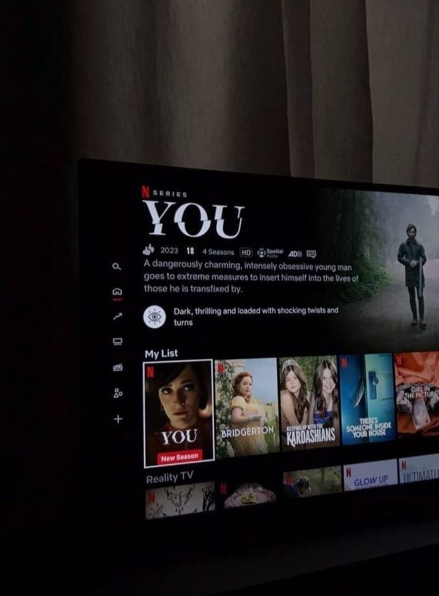
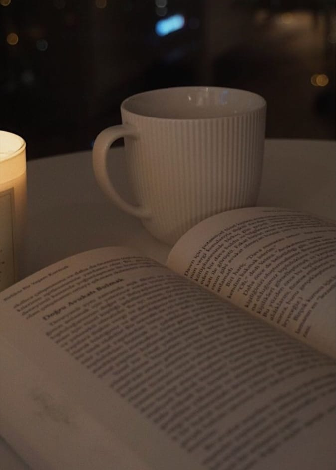
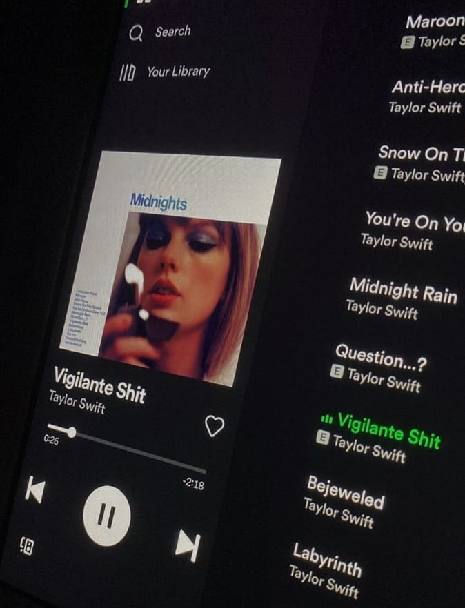
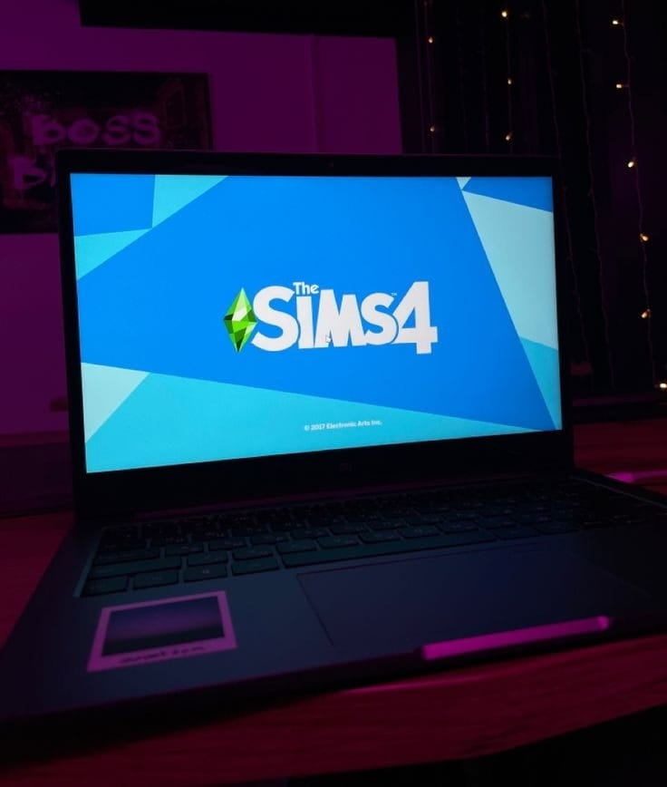
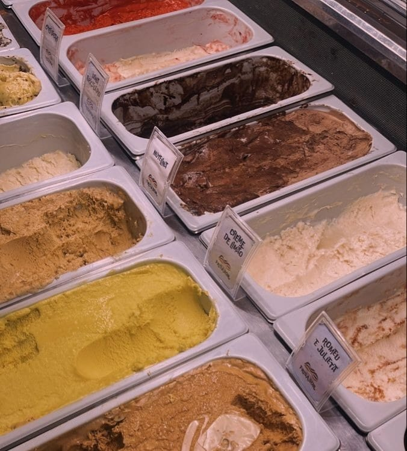

Hobbies 💗
Volte para a pagina inicial
Vá para a pagina de projetos
Vá para a pagina de contatos
Lista de Hobbies:
Assistir séries e filmes✔
Gosto muito de assistir séries e filmes, sempre tento aos finais de semana maratonar series e filmes novos, ou até mesmo rever uma série que gosto muito
Ler✔
Esse é um hobbie que já era de grande costume, mas devido a correria do dia a dia não acontece com grande frequencia, porem eu gosto bastante de ler livros novos
Ouvir músicas✔
Gosto muito de ouvir músicas, seja no caminho do onibus ou em momentos felizes, a musica já faz parte do meu dia a dia
Jogar✔
Sou uma grande fã do jogo The Sims 4, e por conta disso sempre que posso, jogo até enjoar kkk
Sair✔
E por ultimo e não menos importante, gosto muito de sair, seja para tomar sorvete, ir ao shopping, conhecer algum lugar novo, gosto de sair




